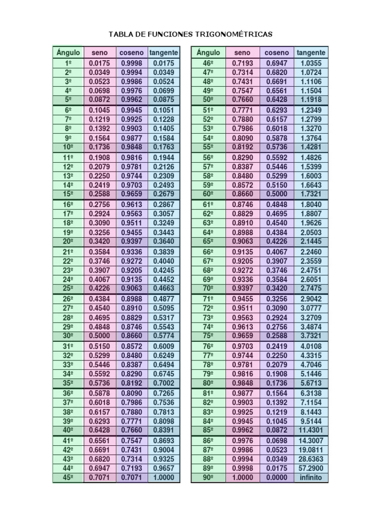
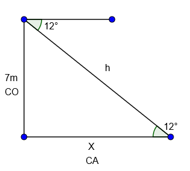
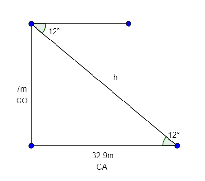
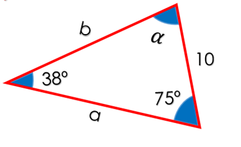

Integrantes del equipo:
Alexis Juarez Ruiz
Jarin Hazan Aleman Cobaxin
Jennifer Itzamar Vargas Inocente
Samantha Carreto Corte
Efren David Morales Gonzalez
Julissa Cisneros Peña
Grupo: 603
Fecha: 18/04/2023
Identificación de razones y funciones trigonométricas
Las razones trigonométricas de un ángulo agudo en un triángulo rectángulo
son las siguientes:
Seno: Razón entre el cateto opuesto al ángulo y la hipotenusa.
Coseno: Razón entre el cateto adyacente al ángulo y la hipotenusa.
Tangente: Razón entre el cateto opuesto al ángulo y el cateto adyacente.
Tabla de Coseno, Seno y Tangente
Ejemplo de problemas
Del siguiente triángulo... encuentra el valor del cateto adyacente (x)
utilizando las fórmulas correspondientes.

1. Para resolver el ejercicio debemos conocer las siguientes fórmulas:
tan(a) = co/ca y cos(a) = ca/h.
2. Para calcular el valor de x observamos los valores que tenemos.
3. En este caso usaremos:
tan(a) = co/x.
4. Como no reconocemos el valor de la x, despejamos la fórmula:
x = co/tan(a).
5. Ahora sustituimos los valores:
x = 7m/tan(12).
6.Luego realizamos la operación y tenemos que...
x = 7m/tan(12) = 32.93.
7.El valor de x es:
x = 32.93m.

Ejercicios para resolver
Ejercicio 1: Problema del Seno
Tenemos el siguiente triángulo con medidas en la cual debemos calcular el lado "b".
